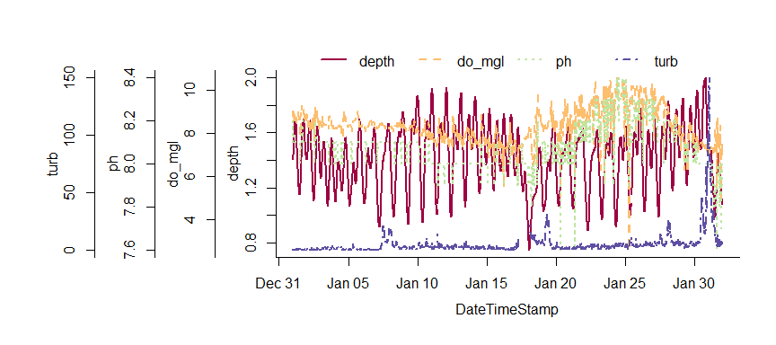

I’ve just released an updated version of my package for estuary monitoring data, SWMPr, available on CRAN. I’ve made several additions to the package since it’s initial release - nothing too crazy but enough to warrant another push to CRAN and blog post. I’ve been pretty bad about regular updates but I’ve added a few features to make some of the functions easier to use in addition to some new functions for plotting SWMP data. I’ll start with a brief overview of the package then describe/illustrate some of the major changes since the last version (2.0.0) released on CRAN. As always, please keep a close watch on the GitHub repository for progress on the development version of the package.
What is SWMPr? SWMPr is an R package that helps with data retrieval, organization, and analysis of estuary monitoring data from the National Estuarine Research Reserve System (NERRS). NERRS is a collection of reserve programs located at 28 estuaries in the United States. The System-Wide Monitoring Program (SWMP) was established in 1995 as a long-term monitoring program to collect water quality, nutrient, and weather data at over 140 stations at each of the NERRS locations (more info here). To date, over 58 million records have been collected and are available online through the Centralized Data Management Office (CDMO). The SWMPr package provides a bridge between R and the data provided by SWMP (which explains the super clever name). The package is meant to augment existing services provided by CDMO and to provide additional features for working with water quality time series. The initial release included functions to import SWMP data from the CDMO directly into R, functions for data organization, and some basic analysis functions. The original release also included functions for estimating rates of ecosystem primary production using the open-water method.
What’s new in 2.1? A full list of everything that’s changed can be viewed here. Not all these changes are interesting (bugs mostly), but they are worth viewing if you care about the nitty gritty. The most noteworthy changes include the following:
overplot function lets you cheat and plot multiple variables with identical scaling on the same y-axis. I think this is generally discouraged under sound plotting theory (see the rants here) but the reality is that overplotting is an often requested feature. I had to use the base graphics to write this function since it’s not possible with ggplot. I actually borrowed most of the code from a colleague at NERRS, shouts to the Grand Bay office. To illustrate ease of use…library(SWMPr)
# import data and do some initial clean up
data(apacpwq)
dat <- qaqc(apacpwq)
# a truly heinous plot
overplot(dat, select = c('depth', 'do_mgl', 'ph', 'turb'),
subset = c('2013-01-01 0:0', '2013-02-01 0:0'), lwd = 2)
The qaqc function now has more flexible filtering of QAQC data flags by using regular expression matching, rather than searchign by integer flags as in the previous version. What this means is that a user can now filter observations with greater
Several of the data import functions were limited in the total number of records that could be requested from the CDMO. I made some dirty looping hacks so that most of these rate limitations, although technically still imposed, can be ignored when making large data reuqests to the CDMO. Previously, the single_param, all_params, and all_params_dtrng functions were limited to 100 records in a single request - not very useful for time series taken every 15 minutes. The new version lets you download any number of records using these functions, although be warned tha t the data request can take a long time for larger requests. As before, your computer’s IP address must be registered with the CDMO to use these functions.
Although it’s now theoretically possible to retrieve all the data without leaving R, usign the import_local function is still much, much easier. The new release of SWMPr lets you import data
Cheers,
Marcus